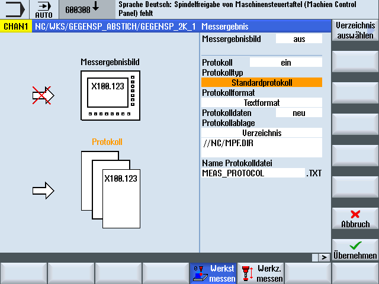
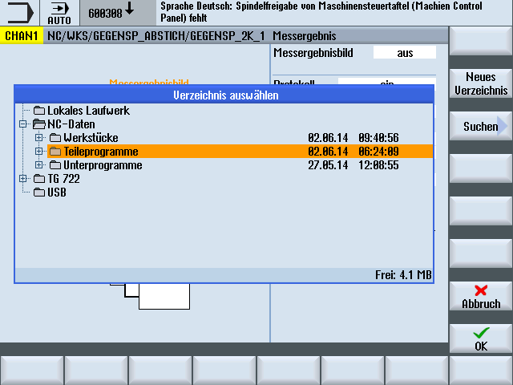

Funktion
Die Aktivierung der Funktion Protokollieren erfolgt durch einfache Programmierung des Zyklen-Aufrufs CYCLE150. Ergebnisanzeige und Protokollieren können getrennt ausgewählt und unabhängig voneinander gesteuert werden. Parameter im CYCLE150 wirken modal bis zum Programmende oder Reset bzw. bis zu einem erneuten Zyklusaufruf.
Vorgehensweise
Das Protokollieren wird programmgesteuert ein- und ausgeschaltet über entsprechende Parametrierung des CYCLE150. Dieser ist einmal am Anfang des Messprogrammes zu programmieren. Nur bei Änderung der Eingabeparameter ist eine erneute Programmierung vor dem jeweiligen Messzyklusaufruf erforderlich. Mit Programmende (Kanal-RESET) erfolgt das Ausschalten der Funktionen automatisch, es muss nicht explizit programmiert werden.
Das zu bearbeitende Teileprogramm bzw. Shop Mill-Programm ist angelegt und befindet sich im Editor.
Die Maske enthält ein Auswahlfeld für das Messergebnisbild zum Aus- und Einschalten mit den Toggelzuständen "aus" / "ein". Außerdem enthält es ein Auswahlfeld für das Protokoll zum Aus- und Einschalten mit den Toggelzuständen "aus" / "ein" / "letzte Messung".
Wenn die beiden Auswahlfelder den Toggelzustand "aus" haben, werden alle nachfolgenden Eingabefelder zur jeweiligen Funktion weggeblendet.
Parameter
Parameter | Beschreibung |
|---|---|
Messergebnisbild | aus / ein |
Anzeigemodus | autom. 8 s / NC-Start / bei Alarm |
Protokoll | |
Protokolltyp | Standardprotokoll / Anwenderprotokoll |
Protokollformat (bei Standard) | Textformat / Tabellenformat (Dateiextension TXT / CSV) |
Protokolldaten | neu / anhängen |
Protokollablage | Verzeichnis / wie Teileprogramm / Variable |
Name Protokolldatei | Dateityp entsprechend Auswahl Protokollformat eingestellt |
Protokolltyp
Die vorhandene Infrastruktur für die Protokollierung der Messergebnisse soll dem Anwender zugleich für eigene Zwecke - Ausgabe von Anwenderprotokollen - zugänglich gemacht werden. Daher wird zwischen Standardprotokoll und Anwenderprotokoll unterschieden.
Protokollformat
Standardprotokolle können in zwei verschiedenen Protokollformaten ausgegeben werden, als Textformat oder als Tabellenformat. Das Textformat lehnt sich an die Messergebnisbilddarstellung am Bildschirm an. Das Tabellenformat ist ein Ausgabeformat, welches von Excel (oder anderen Tabellenprogrammen) importiert werden kann. Damit wird eine statistische Weiterverarbeitung von Messergebnisprotokollen ermöglicht.
Die Auswahl Textformat/Tabellenformat gibt es nur für Standardprotokolle. Bei Anwenderprotokollen ist der Anwender selbst für die Formatierung zuständig, d. h., das Auswahlfeld wird beim Anwenderprotokoll weggeblendet.
Protokolldaten
Die Protokolldatei kann neu angelegt oder weiter fortgeschrieben werden. Das wird über Protokolldaten "neu“ und "anhängen“ ausgewählt. Bei Datei "neu“ wird eine vorhandene Datei gleichen Namens gelöscht und durch das Protokollieren neu angelegt.
Protokollablage
Für die Protokollablage kann der Pfad explizit oder implizit angegeben werden, d. h., es gibt die Auswahlmöglichkeiten "Verzeichnis", "wie Teileprogramm" oder "Variable".
Bei "wie Teileprogramm“ wird von den Protokollierzyklen automatisch der Pfad des übergeordneten NC-Programms ermittelt und die Protokolldatei dorthin gespeichert. Das folgende Eingabefeld für den Pfad wird weggeblendet. Bei "Verzeichnis“ gibt es ein zusätzliches Eingabefeld, in dem der Pfad eingetragen wird. Der Pfad muss nicht eingegeben werden, sondern kann über einen Dialog, der durch den zusätzlichen VSK1 "Verzeichnis auswählen“ eröffnet wird, ausgewählt werden.
Bei "Variable" wird im folgenden Feld der Name der Variable eingegeben. Über diese Variable wird dann der Name der Protokolldatei programmiert. Eine Pfadangabe ist dabei möglich aber nicht notwendig. Die Protokolldatei liegt dann im selben Pfad wie das übergeordnete NC-Programm.
Einstieg in Auswahldialog für Protokollablage
Der Softkey "Verzeichnis auswählen" erscheint nur, wenn im Auswahlfeld Protokollablage "Verzeichnis“ eingestellt ist.
Auswahldialog für Protokollablage
Auswählbar sind alle im Programmmanager vorhandenen Laufwerke und Pfade.
lokales Laufwerk
NC-Daten (Teileprogrammspeicher)
Netzlaufwerk(e), sofern verbunden
USB (wenn vorhanden)
Es kann im Dialog nur ein Pfad oder auch eine vorhandene Datei ausgewählt werden.
Wird nur ein Pfad ausgewählt, so wird mit dem Softkey Übernehmen die Auswahl mit dem kompletten Pfad in die Maske übertragen, ist aber noch änderbar. Der Name der Protokolldatei wird eingegeben. Wird eine Datei ausgewählt, werden vollständiger Pfad und Dateiname in die Maske übertragen, sind aber noch änderbar.
Alternativ ist es möglich, die Ablage einzugeben.
Beispiele für ausgewählte Ablage:
NC-Daten -> Werkstück -> Werkstück "Protokolle“
//NC:/WKS.DIR/PROTOKOLLE.WPDNetzlaufwerk Protokolle
//d:/ProtokolleUSB -> Messzyklen_Protokolle
//USB:/01/Messzyklen_Protokolle
Name Protokolldatei
Der Name der Protokolldatei ist frei wählbar. Er muss den Regeln für Programmnamen in der NC bzw. für Dateinamen bei Schreiben auf externe Laufwerke entsprechen.
Dateityp
Es werden folgende Dateitypen unterstützt:
Textfile - Typ TXT
Tabellenformat – Typ CSV
Diese Dateitypen sind abhängig vom gewählten Protokollformat.
Der Dateityp ist nicht veränderbar, er wird nur angezeigt.